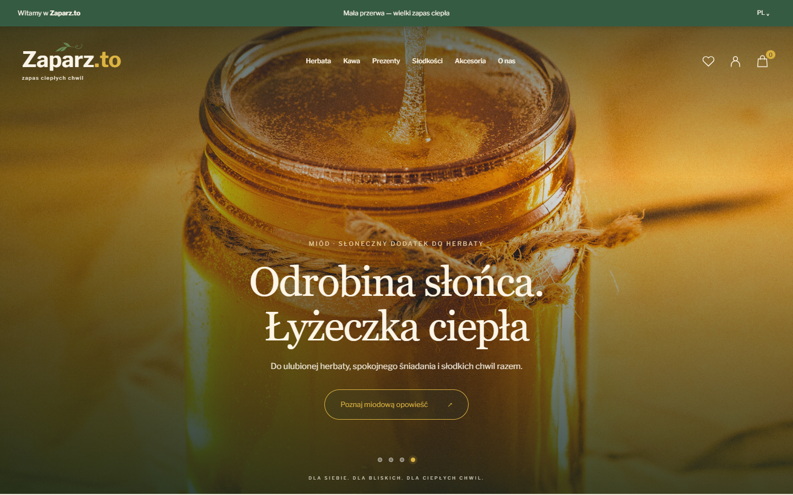
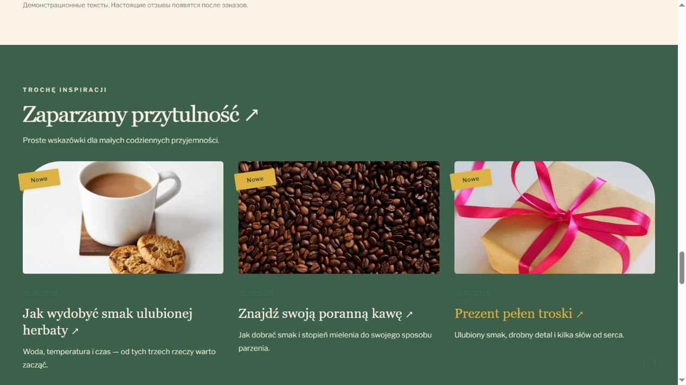

ASP.NET Core · Web Design
Zaparz.to
Tea & coffee storefront, customer accounts, and an editorial journal.

Brief
Zaparz.to is a tea and coffee e-commerce website. The project brings product discovery, a shopping cart, checkout, and customer accounts into one shopping experience.
My Role & AI Workflow
I defined the design, interface layout, and interaction logic. AI assisted with writing code and proposing implementation ideas. I evaluated those suggestions and selected the ones that supported the project’s goals.

Sketches / Design
I defined the visual direction, page structure, interface layout, and interaction logic. Deep green, cream, and warm gold tones connect the storefront to tea and coffee rituals. Product information and editorial content are arranged to support browsing and discovery.
Tools & Technologies
C#, ASP.NET Core Razor Pages, HTML, CSS, JavaScript, and AI-assisted development.

Blog as a Digital Magazine
The blog is presented as Chwile z Zaparz.to, a digital magazine with numbered editions, photographic covers, a lead story, and supporting headlines. Readers can browse issues and explore articles by category or tag. Tea and coffee stories, recipes, and gift ideas extend the visual identity of the store into an editorial experience.
The reading layout combines large photographs, serif headings, a warm cream background, and generous spacing. The magazine creates a connection between product discovery and everyday rituals, giving visitors a reason to return beyond shopping.


Responsiveness
The storefront adapts to desktop, tablet, and mobile screens. The mobile homepage keeps the brand, navigation, headline, and main action visible in a compact layout. Product pages include touch-friendly quantity and weight controls.
Final Result
An e-commerce application combining a product catalog, basket, guest and member checkout, customer accounts, and an editorial journal. The project is under development.